Sociologia:
É comum que parte dos estudantes, mesmo que ainda não conheça os temas da Sociologia e como eles são tratados, estranhe o estudo desse componente e questione por que ele é necessário.
As dificuldades iniciais com a Sociologia podem ser explicadas de várias formas. Uma delas está relacionada ao fato de vivermos em uma sociedade que exige, tanto do jovem como dos adultos, que os conhecimentos adquiridos na escola tenham utilidade prática, para que possam ser reproduzidos no mercado de trabalho. Conhecimentos com menos aplicabilidade técnica, por sua vez, às vezes são considerados divagações de pouca importância.
Essas “divagações”, no entanto, também têm utilidade. O raciocínio do parágrafo anterior a respeito da aplicabilidade técnica dos conhecimentos adquiridos é um exemplo de análise social do convívio coletivo que pode ajudar a compreender o mundo em que vivemos e a refletir sobre como queremos participar dele.
Antes de definirmos o que é Sociologia, podemos adiantar que ela não é o estudo do ser humano e seu ambiente; para isso, temos a Geografia. A Sociologia também não é o estudo da história da humanidade e das sociedades; para isso, temos a História propriamente dita. Esses dois componentes são conhecidos pelos estudantes desde o Ensino Fundamental, e a Sociologia, de certa forma, utiliza conhecimentos geográficos e históricos para explicar o comportamento humano em sociedade.
Por outro lado, como veremos, a Geografia e a História também se alimentam dos conhecimentos sociológicos para explicar muitos fenômenos pertinentes ao espaço geográfico e aos acontecimentos históricos.
Aloisio Mauricio / Fotoarena
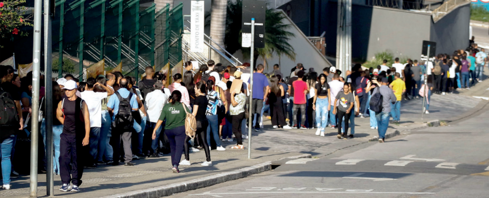
Trabalhadores desempregados aguardam cadastramento em mutirão de emprego. Carapicuíba (SP), 2024.
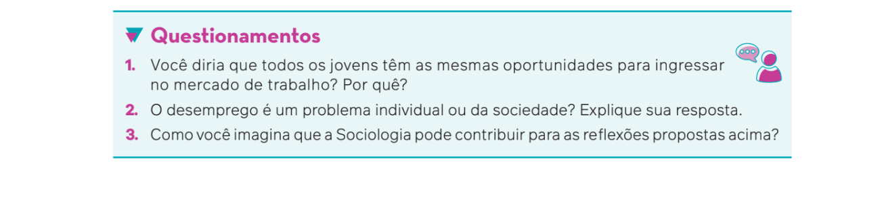
O objeto de estudo da Sociologia
Assim como a eletricidade é um fenômeno estudado pela Física, os organismos que têm células são estudados pela Biologia e os elementos oxigênio e carbono são objetos de estudo da Química, a Sociologia tem seu objeto de estudo: os fenômenos sociais. Fenômenos sociais são as relações que os indivíduos estabelecem entre si, gerando normas de comportamento e atitudes, formando grupos e elaborando ideias sobre esses grupos.
Émile Durkheim (1858-1917), sociólogo francês considerado “pai” da Sociologia acadêmica, afirmou que os fenômenos sociais são sui generis. Sui generis é um termo do latim que significa, literalmente, “do próprio gênero”, ou seja, “único em seu gênero”. O entendimento dos fenômenos sociais, assim, requer uma ciência também única e específica para seu estudo.
Consideremos o seguinte exemplo. Recentes estudos já comprovaram que o cigarro faz mal à saúde. Uma professora de Química pode explicar que os elementos químicos presentes no cigarro (alcatrão e nicotina) causam determinada reação no organismo, o que, com o decorrer do tempo, pode provocar câncer de pulmão. Por sua vez, a Biologia pode explicar como esses elementos químicos deterioram os pulmões, cuja função é vital para o corpo humano.
Mas por que as pessoas sabem disso e continuam fumando?
Para responder a essa pergunta, podemos recorrer à Psicologia, que talvez afirme que os fumantes são influenciados por outras pessoas ou pela publicidade.
E por que milhões de cigarros são produzidos, já que as indústrias sabem que eles são prejudiciais à saúde? Por que o governo permite a venda de cigarros?
A Química e a Biologia não podem ajudar a obter respostas a perguntas como essas. Entra em cena, então, a Sociologia, para dar uma explicação possível: os interesses econômicos das grandes indústrias, cujo objetivo é o lucro – legitimado pela maioria dos governos do mundo e principal fator da existência do capitalismo. O capitalismo é um sistema econômico, social e político que é objeto de estudo da Sociologia.
Os efeitos químicos do cigarro, portanto, são objetos sui generis da Química, e as consequências orgânicas do uso de cigarro para os pulmões são objetos sui generis da Biologia. Entretanto, o motivo que leva as pessoas, como os proprietários das fábricas de cigarro, a produzir e comercializar o cigarro é objeto sui generis de estudo da Sociologia.
Esse é apenas um exemplo de como a Sociologia contribui para entendermos uma questão básica: a vida cotidiana é social, ou seja, não estamos sós no mundo. Estabelecemos relações com outros indivíduos e criamos regras de convivência. Algumas regras já existiam quando nascemos e, provavelmente, existirão depois de nosso falecimento. Sob esse aspecto, o indivíduo é um produto social, isto é, o que as pessoas fazem é influenciado, muitas vezes, pela convivência com outros indivíduos e grupos de indivíduos.
Nesse sentido, a preocupação central da Sociologia é com o ser humano e suas relações sociais, pois entende que os indivíduos não são isolados. Pelo contrário: relacionam-se uns com os outros e formam grupos sociais, com regras de comportamento e atitudes diversas na família, na escola, no trabalho, no lazer e em outros espaços de convivência cotidiana.
Essas regras de comportamento, no entanto, não são estáticas, mas bastante dinâmicas. No decorrer da história, as pessoas modificam seus comportamentos, atitudes e formas de lidar com a realidade. Exemplo disso é a existência do divórcio, recurso que não estava disponível para gerações anteriores de nossa sociedade, quando a união matrimonial não era mais desejada pelo casal.
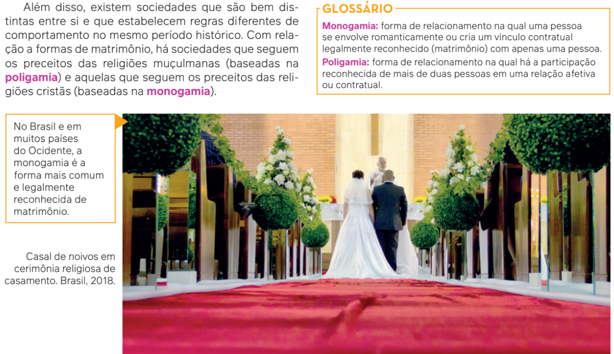
HenriqueLiamas/Getty images
Como a Sociologia imagina o mundo?
As manifestações populares constituem um comportamento de grupo com o intuito de apoiar ou questionar determinadas estruturas sociais ou condutas institucionais. A manifestação retratada na fotografia foi organizada por uma parcela da sociedade contrária às medidas e posturas do governo federal no enfrentamento à pandemia de covid-19.
HenriqueLiamas/Getty images
A Sociologia, além de estudar as
relações sociais e os comportamentos
dos indivíduos e dos grupos, aborda
os conflitos entre esses grupos e as
razões deles para deixarem de seguir
as regras de funcionamento das sociedades, bem como os motivos que
as pessoas têm para questionar ou legitimar essas regras.
O sociólogo estadunidense Charles
Wright Mills (1916-1962) escreveu um
livro chamado A imaginação sociológica, publicado pela primeira vez em
1959. Nessa obra, com o objetivo de
explicar a importância da Sociologia,
Wright Mills afirma que essa ciência
representa a qualidade do espírito humano de perceber o que acontece nomundo e como nos situamos nele.
Para exemplificar como a Sociologia investiga a sociedade, Wright Mills discute o desemprego. Se em uma cidade de milhares de habitantes, por exemplo, apenas um indivíduo
está desempregado, isso é um problema pessoal dele. Para entender esse problema, talvez
tenhamos de observar a personalidade dessa pessoa, suas habilidades e as oportunidades
que recebe. Por sua vez, se existem 15 milhões de desempregados em um país de 50 milhões de trabalhadores, isso já não é um problema individual e, sim, um problema coletivo,
que está relacionado com a estrutura e o funcionamento da sociedade.
Outro exemplo discutido por Wright Mills é o divórcio. Um casal pode ter perturbações
pessoais, o que o levará ao divórcio. Porém, quando o número de divórcios cresce em uma
cidade e, de cada mil casais, 250 se separam nos primeiros quatro anos de casamento, isso
pode ter relação com a instituição do casamento naquela determinada sociedade.
Wright Mills apresenta uma questão simples e que nos permite perceber que nossa
vida, ou seja, aquilo que experimentamos em vários âmbitos do cotidiano, como desemprego e divórcios, muitas vezes é influenciado por questões culturais, econômicas ou
de caráter mais geral que ocorrem nas sociedades. Por isso, segundo o autor, precisamos ter consciência da existência de uma estrutura da sociedade e das relações sociais
e utilizar essa noção com sensibilidade para sermos capazes de identificar as ligações
entre as diversas experiências da vida cotidiana. Ter essa consciência e essa capacidade é ter uma imaginação sociológica.
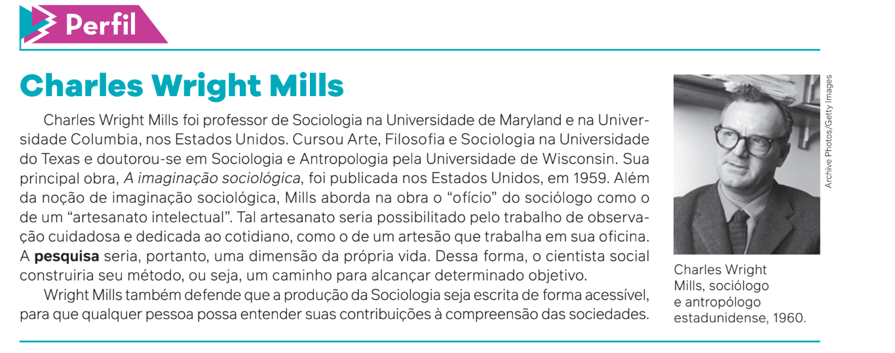
Observando além do senso comum
Até aqui, refletimos sobre a necessidade de estudar Sociologia e a importância de pensar sociologicamente o mundo. Agora, vamos discutir uma questão importante nesse campo de conhecimento e estudo: a diferença entre senso comum e Sociologia.
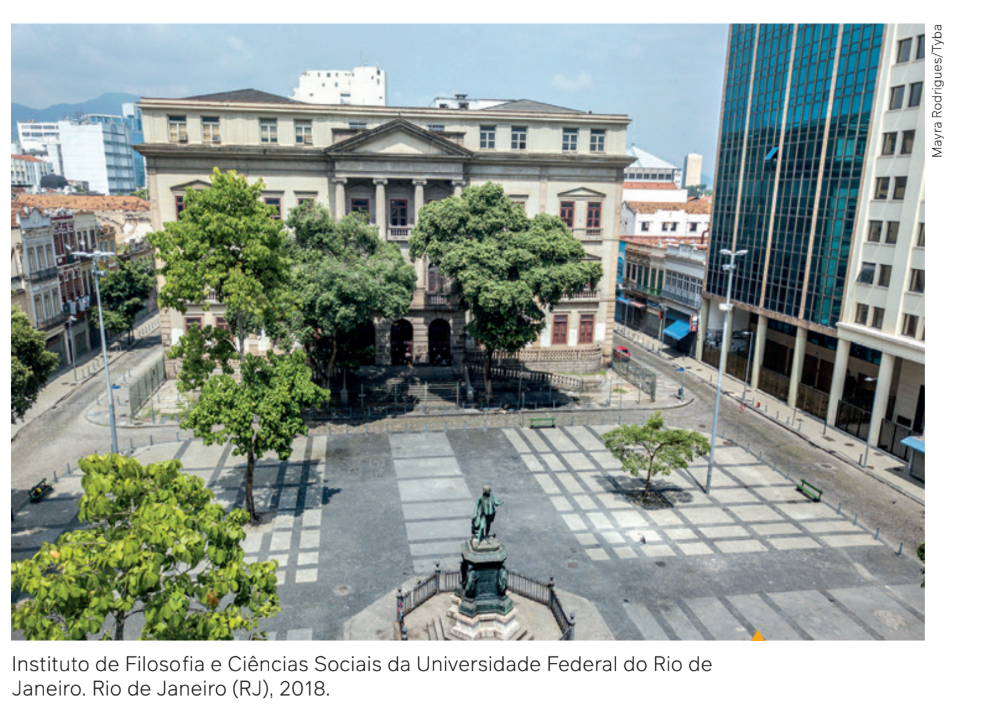
Nos cursos de graduação em Ciências Sociais oferecidos nos centros de Ciências Humanas, estudantes pesquisam com base em métodos científicos da Sociologia.
A atitude científica em
Sociologia, por sua vez,
envolve um método com
os seguintes passos:
constatação de um pro
blema social, observação
dos fatos e da realidade
dos indivíduos e grupos
e de suas relações, for
mulação de hipóteses de
explicação, pesquisa e es
tudo aprofundados sobre
o assunto e, ao final, ela
boração de tendências de
que um fato possa ocor
rer em razão de determi
nados motivos.
Voltemos ao exemplo
do desemprego. No Brasil,
o desemprego é um pro
blema social, porque sua
origem está relacionada
com a forma de orga
nização da sociedade e
porque atinge grande número de indivíduos. Com essa constatação, poderíamos formular a
hipótese de que a política econômica de determinado governo promove o desemprego. Em
seguida, devemos observar a realidade com dados estatísticos em mãos, como pesquisas que
indiquem os fatores que levaram as pessoas ao desemprego. Ao retornar à hipótese inicial,
podemos avaliar se determinadas decisões políticas governamentais tendem a provocar o de
semprego em massa no país.
A Sociologia, portanto, parte de diversas teorias sociológicas, conceitos e temas para
incentivar a imaginação sociológica e ir além do senso comum. Aquilo que pode parecer
“natural” nas relações sociais pode ser “desnaturalizado”, deixando de ser visto como imutável
para ser compreendido como o que ele realmente é: um fenômeno social. Segundo Wright
Mills, para compreender nosso mundo cotidiano, devemos olhar além dele.
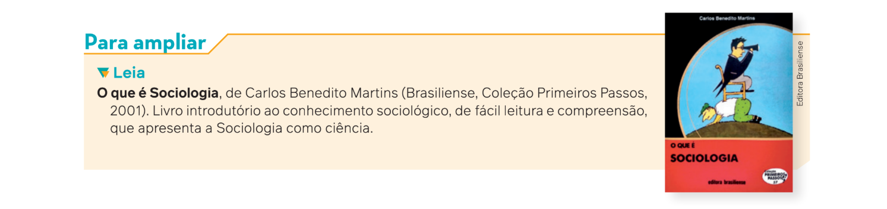
A socialização dos indivíduos
Você considera que o pensamento e a ação dos indivíduos influenciam a sociedade como
um todo ou, pelo contrário, é a sociedade que influencia o pensamento e o comportamento de
cada indivíduo? Esse é um grande dilema e um dos grandes temas da Sociologia a respeito do
comportamento humano. É a reflexão sobre a socialização dos indivíduos.
Primeiro, vamos refletir sobre o conceito de socialização; depois, em outro momento,
entenderemos como alguns pensadores trataram as relações entre indivíduo e sociedade.
Quando falamos em socialização dos indivíduos, estamos sugerindo que aquilo que somos é resultado do que aprendemos na convivência com outros seres humanos, com base em valores, ideias, atitudes e fazeres comuns. Assim, os sentimentos que você tem sobre uma criança, sua ideia sobre um assunto, seu tratamento de respeito aos idosos ou seu modo de se vestir são aprendidos por meio do seu contato com as gerações anterio- res. Você é consciente do que faz, sente e pensa na relação com outras pessoas.
Imaginemos, então, a seguinte situação. Quando nasce uma criança, a vida dos responsáveis
por ela muda por completo. No entanto, dependendo de como a criança é fisicamente, podemos
imaginar de maneira intuitiva como ela será tratada pelos familiares, pelos vizinhos ou pelos
conhecidos, bem como qual será a expectativa dos adultos sobre seus comportamentos e as
atitudes que ela deve tomar.
Se a criança for do sexo biológico feminino, serão esperados, com o passar dos anos, vários
rituais específicos, roupas características, comportamentos e atitudes – inclusive com relação
a seu desempenho profissional. Dependendo dos valores que a criança receber dos adultos,
ela pode ter um comportamento submisso ou, então, um comportamento de disputa ou de
igualdade perante os homens. Se a criança for do sexo biológico masculino, serão esperados
outros rituais, roupas, comportamentos e atitudes. Se a criança vive em uma sociedade em
que existem pessoas com cor de pele ou etnias distintas, dependendo de como a maioria
dessa sociedade pensa, a criança, sendo negra ou branca, por exemplo, poderá ser tratada de
uma forma diferente, com privilégios ou não. Os olhares para a cor, para os cabelos ou para
outros aspectos físicos poderão representar determinada visão de mundo, com suas possíveis
definições a respeito do caráter, da origem e da expectativa de um futuro de sucesso ou não.
Se a criança vive em uma sociedade dividida em classes sociais, ou seja, em que as pessoas não têm a mesma condição econômica de acesso às riquezas produzidas pela sociedade, a ascensão social dessa criança dependerá muito da condição econômica dos responsáveis e da possibilidade de acesso à educação e a outros bens que a situação de classe determina.
Podemos imaginar mais aspectos, como a possível influência das
referências de vida dos adultos ao redor (valores, moralidade, ética,
jeito de se comportar, entre outros) ou da religião e até mesmo do so-
taque deles.
Concluímos, portanto, que todas as pessoas são socializadas de
acordo com seu ambiente social. A primeira fase de socialização é cha-
mada de socialização primária. Ela acontece nas famílias e representa
o momento em que aprendemos a nos comportar diante da sociedade.
A socialização que ocorre no ambiente familiar, entre os cuidadores da criança, é chamada de socialização primária.
Em seguida, quando ingressamos na escola ou entramos em contato com outros ambientes que não o familiar,
por meio de colegas, grupos de jovens ou até em redes sociais ou programas televisivos, acontece a chamada
socialização secundária.
Os dois tipos de socialização condicionam, ou seja, influenciam nossas relações com outros indivíduos e,
dependendo da forma, do ambiente social e da educação que recebemos, adotamos ou abandonamos uma série
de papéis sociais. Você deve estar perguntando: papel? O que isso tem a ver com o social?
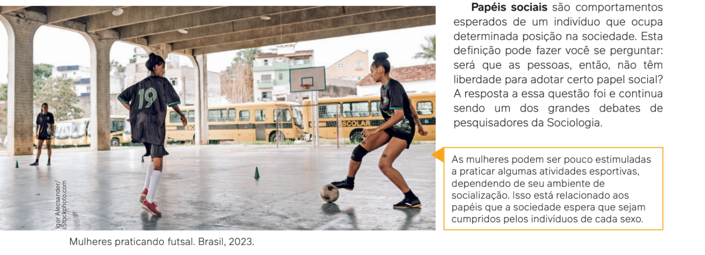
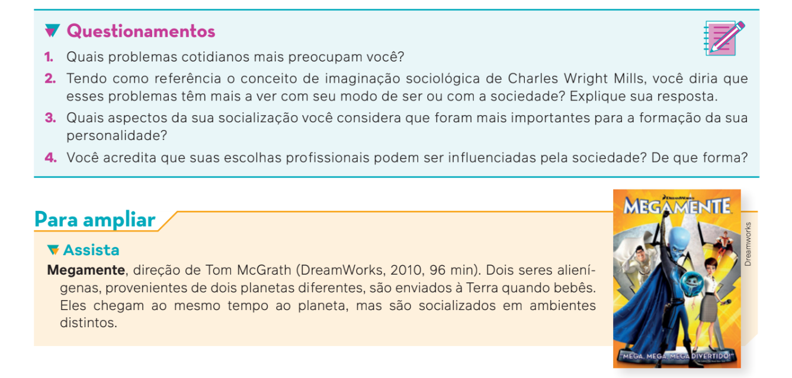
As instituições sociais
Outro tema importante da Sociologia relacionado com a nossa vida são as instituições
sociais.
Quando falamos anteriormente de uma criança hipotética, chegamos à ideia de que ela
aprende regras e normas sociais. Normas e regras existem em todas as sociedades, pois exer
cem determinado controle sobre os indivíduos e garantem o funcionamento da própria socie
dade. Os indivíduos sabem que as regras existem e as aprendem desde a mais tenra idade. São
as instituições sociais que impõem esse controle sobre os indivíduos e os levam a cumprir as
regras e condutas esperadas.
Em uma partida de futebol, por exemplo, muitas vezes reparamos mais nos jogadores do
que nas regras do jogo. Os jogadores, evidentemente, são mais visíveis do que as regras. E na
sociedade: prestamos mais atenção nos indivíduos ou nas instituições?
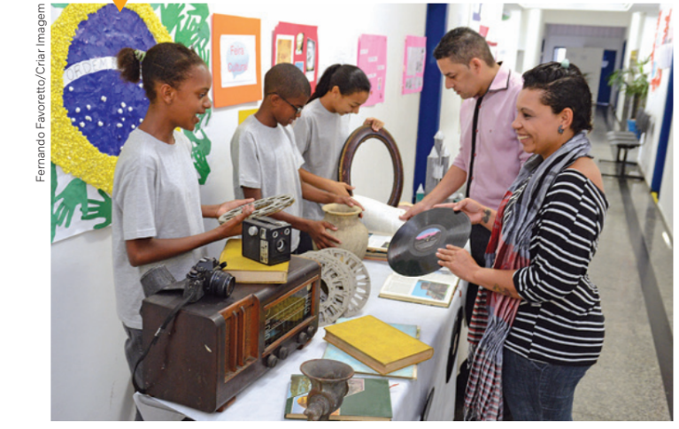
Em primeiro lugar, a reflexão sobre as institui-
ções sociais é muito importante para pensar sobre
a nossa vida e o cotidiano. As instituições estão
por todos os lados. Nossa convivência com os fa-
miliares se dá na instituição família, que tem suas
regras de comportamento e maneiras de pensar.
Da mesma forma, há a instituição escola, com
todas as suas normas, que envolvem os critérios
Estudantes apresentam trabalho realizado na escola. Itaquaquecetuba (SP), 2019.
de avaliação de desempenho, os horários e os uni-
formes, assim como a convivência com professo-
res e outros profissionais.
Quando vamos nos divertir com nossa família
em um clube do qual somos sócios, por exemplo,
estamos participando diretamente de uma institui-
ção voltada para o lazer. Já uma pessoa que fre-
quenta um local de culto, como uma igreja, está
associada a uma instituição para fins religiosos.
No decorrer da vida, temos de lidar com uma série de documentos e com uma burocracia
que pertence ao Estado, que é outra instituição fortemente presente em nosso cotidiano.
A ação das instituições sociais
Não vivemos, contudo, em um mundo “automático”, em que tudo é determinado por insti
tuições sociais. Da mesma forma que elas moldam os indivíduos, eles também podem moldar
as instituições.
As instituições influenciam os indivíduos por meio de regras e normas impessoais e con
trole – como sanções ou ameaças de sanções.
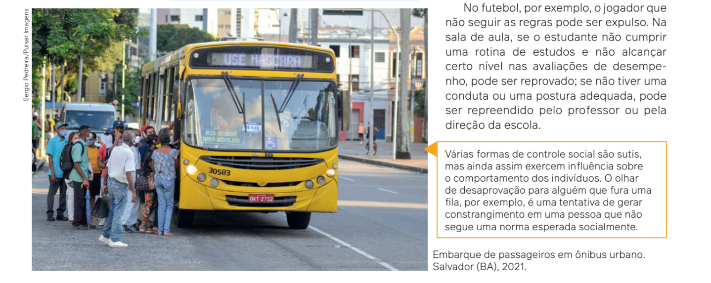

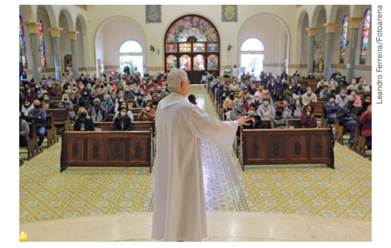
Mudanças também podem ocorrer em instituições com re-
gras rígidas, devido às ações e atitudes de certos indivíduos.
Por exemplo: a Igreja Católica, há algumas décadas, exigia que os padres realizassem as celebrações somente em latim, que era a língua oficial do Império Romano.
Por exemplo: a Igreja Católica, há algumas décadas, exigia que os padres realizassem as celebrações somente em latim, que era a língua oficial do Império Romano.
Padre celebrando missa. Campinas (SP), 2022.
Porém, os membros da
Igreja questionavam a dificuldade de participar das missas e
celebrações, o que levou a questão a ser debatida na déca
da de 1960, durante uma conferência que reuniu importantes
autoridades da Igreja Católica, sendo a principal delas o Papa
João XXIII. O evento, chamado Concílio Vaticano II, foi respon
sável por implementar importantes transformações na Igreja,
entre elas a possibilidade da celebração das missas no idio
ma local. Esse é um exemplo explícito de que as instituições
podem sofrer mudanças devido à ação dos indivíduos.
Entendendo isso, podemos definir as instituições sociais como órgãos reguladores da vida
humana, que dizem de que maneira devemos nos conduzir, que existem de forma padronizada
e que constrangem os indivíduos a seguir comportamentos e atitudes desejáveis pela socieda
de. Muitas vezes, as instituições sugerem que suas próprias formas de fazer e pensar as coisas
do mundo são as únicas válidas para toda a sociedade.
As instituições existem independentemente de nós e moldam nossas ações e expectativas.
Ainda que discordemos da forma como atuam, não podemos negá-las e temos de cumprir
certos papéis sociais – se os recusamos, as instituições têm um número variado de recursos
de controle e sanções.
Mas, como dissemos antes, a vida com as instituições não é tão automática assim. Se elas
são entidades quase impessoais e estão acima de nós, por que muitas pessoas as aceitam e
convivem plenamente com elas? A resposta está relacionada com o fato de que quase sempre
desejamos aquilo que a sociedade e outras instituições esperam de nós; e também porque o
que somos e a forma como definimos as coisas em grande medida condizem com o que as
instituições estabelecem. Isso também pode ser entendido tendo em vista que todas as insti
tuições tiveram uma origem em determinada época da história.
Os seres humanos sempre inventaram novas formas de conduta, novas regras, novos valo
res e novas ideias. Contudo, à medida que são transmitidos às novas gerações, as condutas, as
regras e os valores se cristalizam ou se solidificam, quer dizer, passam a ser percebidos como
independentes dos indivíduos que os mantêm e os desejam. É como se as instituições sociais
adquirissem vida própria, cuja existência não é mais percebida como uma criação humana.
Por isso, é muito difícil os indivíduos perceberem que as instituições – ou a estrutura da
sociedade em que vivem – são assim porque outros indivíduos, em determinado momento,
instituíram-nas e as reproduziram. Entretanto, isso não impede que as pessoas modifiquem
uma instituição – ou a destruam – e criem outras no lugar.
As instituições, portanto, funcionam para determinado fim, representam certas ideias, có
digos e valores expressos com determinada linguagem, se autorreproduzem para se legitimar,
têm durabilidade muito maior que a dos grupos e a dos indivíduos e interagem e influenciam
mutuamente outras instituições.
As famílias
Quase todos nós nascemos em uma família. Nem todas as famílias são iguais ou se for
mam da mesma maneira, mas a família é a primeira instituição social com que os indivíduos
entram em contato ao nascer. Por ser uma instituição primordial, ela é a que mais influencia e
tem impacto sobre as relações sociais, assim como sofre as influências de outras instituições
sociais e da história de determinada sociedade. Em geral, uma família é definida por laços de
parentescos, convivência e necessidades mútuas dos indivíduos. Essas são suas caracterís
ticas básicas, cujas formas variam no tempo e no espaço, pois dependem da cultura, ou seja,
de hábitos, costumes e valores de determinada sociedade; e dependem das relações econô
micas, das relações com determinada religião e de outros fatores.
Em algumas sociedades africanas, a identificação de uma família não acontece, por exem
plo, com base na transmissão do sobrenome paterno, mas pelo reconhecimento de quem são
a mãe, as tias ou as irmãs de um indivíduo. Os pais das crianças podem até ser conhecidos,
mas não são eles que possibilitam identificar a família. Isso tem a ver com um estudo bastante
tradicional da Sociologia chamado relações de parentesco. No caso em questão, trata-se de
um sistema de parentesco matrilinear. Já nas sociedades em que as relações de parentesco
são determinadas pela figura paterna, temos um sistema patrilinear.
O antropólogo francês Claude Lévi-Strauss (1908-2009) pesquisou as relações de paren
tesco na década de 1940. Para ele, o parentesco é uma estrutura formal, universal, própria dos
seres humanos. É por meio das variadas formas de parentesco que as famílias se organizam.
Com esses estudos, Lévi-Strauss desnaturalizou a conceito ocidental de família, ou seja, de
monstrou que o tipo de família tradicional nuclear não é universal.
As famílias também são estruturadas e influenciadas por concepções religiosas, condições
econômicas ou valores e ideias em determinada sociedade, no espaço e no tempo. Isso quer
dizer que, dependendo da sociedade e da religião, certas formas familiares são aceitas e ou
tras não. Um bom exemplo diz respeito aos casamentos entre pessoas do mesmo gênero. Na
cultura ocidental, esse tipo de unidade familiar é bastante rejeitado e malvisto, inclusive no
Brasil, onde o casamento homoafetivo é legalmente reconhecido. A maioria das religiões não
aceita esse tipo de união matrimonial e influencia diretamente as pessoas em suas concep
ções sobre o que é família.
A família, portanto, é uma instituição que socializa os indivíduos, tem certas normas, pres
creve condutas e apresenta laços parentais, que podem ser nucleares – com casais que cui
dam de seus filhos – ou ampliadas – compostas também de outras pessoas próximas, não
necessariamente parentes. Por isso, é mais interessante falarmos em “famílias”, no plural.


O exemplo da família extensa
presente nas sociedades africanas
nos ajuda a pensar sobre as diver
sas concepções de famílias. Em
primeiro lugar, ele ilustra bem a não
universalidade do modelo de famí
lia nuclear, como a conhecemos,
tradicionalmente definida como
sendo composta de genitores e ir
mãos.
Mais adiante, veremos como
a Antropologia e os estudos de
Claude Lévi-Strauss foram funda
mentais para esse entendimento e
como contribuíram para a reflexão
sobre as diferentes configurações
familiares na cultura ocidental.
No Brasil, o termo “família
extensa” foi incorporado ao Esta
tuto da Criança e do Adolescente
em 2010 para se referir à família “que se estende para além da unidade pais e filhos ou da unidade do casal,
formada por parentes próximos com os quais a criança ou adolescente convive e mantém vínculos de afinidade
e afetividade”. Ao reconsiderarmos a instituição familiar dentro de um contexto mais abrangente, é impor
tante situá-la em relação às classes e demais condições sociais. Isso porque as configurações familiares no
Brasil sofreram diversas mudanças ao longo das últimas décadas. Você consegue pensar quais foram essas
mudanças?
De acordo com dados do IBGE de 2024, essas são algumas transformações que têm impactado a institui
ção familiar brasileira nas últimas décadas:
• a diminuição da taxa de natalidade: o número de nascimentos registrados no Brasil caiu de 3,4 milhões em
2003 para 2,5 milhões em 2022.
• o adiamento da maternidade: houve um aumento do número de mulheres que tiveram filhos após comple-
tarem 40 anos, ao mesmo tempo que caiu o número de mães com menos de 20 anos de idade.
• crescimento do número de famílias monoparentais chefiadas por mulheres: entre famílias monoparentais
com filhos, ou seja, quando somente uma pessoa assume a parentalidade, 87% dessas famílias são che-
fiadas por mulheres e 13% por homens.
A escola
A escola, como a conhecemos hoje, surgiu por volta dos séculos XVII e XVIII, junto com a
modernidade na Europa. Era na escola que se depositavam todas as esperanças redentoras de
uma sociedade mais justa, igualitária, fraterna e livre.
A história revela que uma “política educacional”, em seu sentido específico, começou no
final do século XVIII e início do XIX, e decorria de três visões de mundo que passaram a ser
dominantes no Ocidente naquele momento: a crença no poder da razão e da ciência, o projeto
liberal de igualdade de oportunidades e a consolidação dos Estados Nacionais.
Quando falamos em “política educacional”, nos referimos a um conjunto de ações planeja
das por instituições – como o Estado – no sentido de construir escolas, contratar professores
e organizar currículos (ou seja, selecionar os conteúdos que serão ensinados).
Com essas ações, a educação escolar recebe uma missão principal: a ilustração do povo.
Essa missão não significou necessariamente que os sistemas nacionais de ensino – na Europa
e na América do Norte – assumiram proporções significativas de imediato. Pelo contrário,
do final do século XVIII até meados do século seguinte, a presença da escola foi, em grande
medida, resultado da intenção de um grupo de intelectuais da burguesia – a classe dominante
composta de industriais, banqueiros e comerciantes.
Só a partir do século XX houve um desenvolvimento significativo do processo de esco
larização nas sociedades ocidentais, atingindo basicamente todas as classes sociais. Nesse
sentido, a escola moderna – tal como hoje a conhecemos – é uma invenção histórica, ou seja,
surgiu com a ascensão do mundo industrial e de uma nova classe social, a burguesia. Assim,
aparece uma instituição especializada – a escola – que separa o aprender do fazer.

Em aula. Gravura
da pintura de Jean
Geoffroy (1853-1924).
Exposição Universal
de 1889. França,
século XIX.
Pensando historicamente o papel desempenhado pela instituição escola, vale lembrar que
faz menos de 200 anos que foi estabelecida a ideia de que a educação é um produto da escola,
com um conjunto de pessoas especializadas na transmissão de saberes e conhecimentos – os
professores.
Esses elementos, portanto, contribuíram para a longa estabilidade da escola. Criaram-se
regras, um tempo de aprendizagem dividido em etapas, uma organização burocrática, um rol
de conteúdos selecionados com objetivos específicos para a formação dos estudantes, siste
mas de avaliação de desempenho que estabelecem quem será “credenciado” com determina
do título (quem receberá o certificado ou o diploma), entre outros. Em outras palavras, a forma
de organização dessa instituição conferiu à escola papel fundamental na seleção daqueles
que serão “incluídos” ou “excluídos” da sociedade como um todo, bem como na escolha de
conteúdos que incidirão sobre a formação cultural e política dos estudantes.
Quando a criança ou o jovem ingressa na escola, o que se discute são as questões in
ternas à escola, que não existem em outros espaços. No espaço escolar existe um cotidiano
específico: ali, crianças e jovens se transformam em estudantes – passando a desempenhar
um papel social. Mas não somente eles. Os adultos, dependendo da função profissional que
ocupam, sendo professores, gestores ou outros funcionários da escola, ocupam espaços e se
relacionam de forma específica. Existem regras também específicas e formas de relaciona
mento entre eles, que devem obedecer a essas regras.
No espaço escolar, existem relações cotidianas que acontecem de formas social e cultural,
territorial e existencial. Isso quer dizer que, apesar das regras existentes, das funções que cada
um ocupa na escola, existe um cotidiano de funcionamento que é muito influenciado pelas
histórias de vida de cada um dos agentes socializadores.
A forma social e cultural da escola é aquela que estabelece regras e formas de funciona
mento, e é muito influenciada por ideias como hierarquia, solidariedade, comportamentos ade
quados, divisão de tarefas, entre outras. A forma territorial segrega a educação em um espaço
próprio: corredores, pátios e salas de aula; e a forma existencial define a nossa forma de ser
por alguns anos da vida, já que ali passamos boa parte do tempo.
Nesse sentido, falar de cotidiano escolar é entender que a escola não é um mundo à parte,
constituído fora da sociedade. No cotidiano da escola, aprendemos muito mais do que os con
teúdos dos componentes curriculares. Assim, ao ingressar nessa instituição, a criança encon
tra outra forma de socialização, outras regras de convivência e outras pessoas com as quais se
relaciona. Esse cotidiano não é frio e sem vida, mas repleto de histórias, desejos, expectativas,
sonhos, paixões, angústias, medos, entre outros. Isso vale também para professores e outros
profissionais da educação.
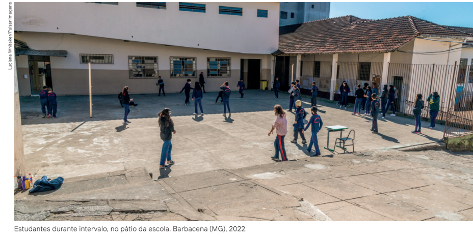

1.
Com base nas leituras e reflexões propostas pelo capítulo, qual foi sua principal compreensão relacionada à Sociologia?
2.
O conceito de imaginação sociológica, de
Charles Wright Mills, articula diferentes
contextos da vida em sociedade e constitui para os
indivíduos a consciência e a capacidade de com
preender e agir nas diferentes realidades sociais.
Com base nesse conceito, reúna-se com um colega
e discuta as afirmações a seguir, identificando quais
delas são corretas e quais são incorretas.
I. O êxito e o fracasso de homens e mulheres de
pendem exclusivamente de seu esforço pessoal.
II. A imaginação sociológica leva os indivíduos a re
lacionar sua história individual aos acontecimen
tos históricos.
III. Acontecimentos históricos raramente definem
os rumos da vida de homens e mulheres comuns.
IV. Podemos compreender a vida dos indivíduos sem
interpretar o contexto social de sua existência.
V. Indivíduos que não desenvolvem a imaginação
sociológica não relacionam a biografia à história,
isto é, o eu com o mundo.
Agora, indique o número das afirmações incorretas
e explique os erros que elas contêm. Converse tam
bém com seu colega sobre o que é necessário alte
rar em cada uma delas para que se tornem corretas.